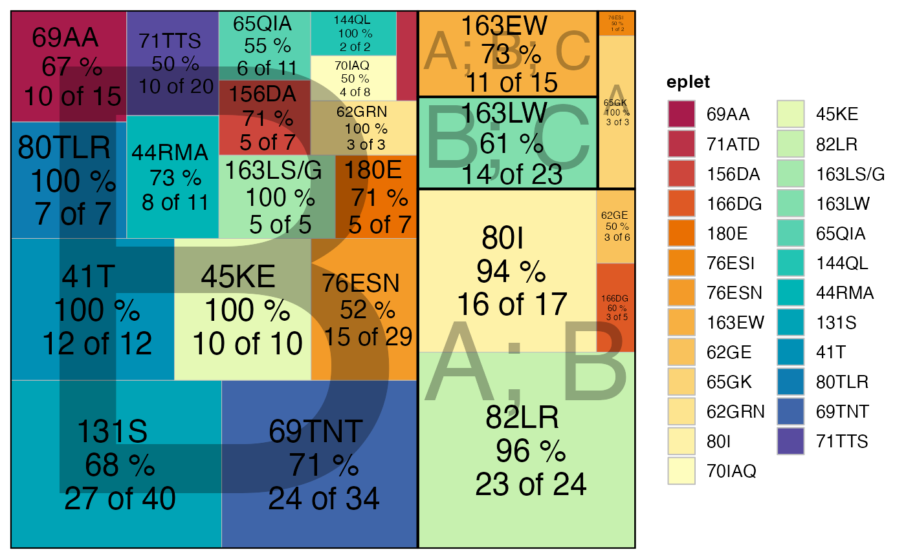

This function reads in SAB (single antigen bead) results (either as a data frame or as a file path to a CSV/XLS/XLSX file), processes the data to quantify eplet-specific positivity based on a specified MFI cutoff, and then generates one of three plot types: a treemap, a bar plot, or an AUC plot. The eplet annotations are joined from an internal database, and the resulting plot is colored by evidence level.
Arguments
- result_file
A data frame containing SAB results or a character string specifying the path to a SAB file in CSV, XLS, or XLSX format.
- cutoff
Numeric. Threshold for MFI to separate positive and negative beads. Default is 2000.
- evidence_level
Character vector indicating the antibody reactivity levels to keep. Defaults to
c("A1", "A2"), which represent antibody-confirmed eplets. Other acceptable levels include"B","D", orNULLto apply no filter.- group_by
A character string or indicating the coloring grouping for the plot, default is `eplet`. Other options include `loci` or `evidence_level`.
- eplet_filter
Integer. (Only used when
plot_type = "AUC") Specifying the minimum number of times an eplet must appear in the assay before calculating the AUC. Defaults to `3`.- percPos_filter
Numeric value. (Only used when
plot_type = "AUC") Value between 0 and 1 specifying the minimum relative proportion of positive beads (per eplet) to include in the final summary. Eplets with a proportion below this threshold are excluded. Defaults to 0.4.- plot_type
Character. Type of plot to generate. Must be one of
"treemap","bar", or"AUC". Defaults to"treemap".- cut_min
Integer. (Only used when
plot_type = "AUC") The minimum MFI cutoff value. Defaults to 250.- cut_max
Integer. (Only used when
plot_type = "AUC") The maximum MFI cutoff value. Defaults to 10000.- cut_step
Integer. (Only used when
plot_type = "AUC") The increment step between the minimum and maximum MFI cutoff values. Defaults to 250.- top_eplets
Integer. The maximum number of top eplets to display in the bar or AUC plot. Defaults to 10.
- palette
Character. A color palette name (from hcl.pals) or a custom palette function to use for the plot. Defaults to
"spectral".- ...
Additional arguments passed to the ggplot theme
Value
A ggplot object visualizing eplet counts (or AUC values) according to the
specified parameters.
Examples
# Using a data frame:
plotEplets(deepMatchR_example[[1]],
cutoff = 2000,
evidence_level = c("A1", "A2", "B"),
percPos_filter = 0.4,
plot_type = "treemap")
